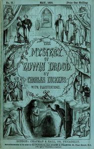

The novel begins as John Jasper leaves a London opium den. The next evening, Edwin Drood visits Jasper, who is the choirmaster at Cloisterham Cathedral. Edwin confides that he has misgivings about his betrothal to Rosa Bud. The next day, Edwin visits Rosa at the Nuns' House, the boarding school where she lives. They quarrel good-naturedly, which they apparently do frequently during his visits. Meanwhile, Jasper, having an interest in the cathedral crypt, seeks the company of Durdles, a man who knows more about the crypt than anyone else.
Neville Landless and his twin sister Helena are sent to Cloisterham for their education. Neville will study with the minor canon, Rev. Crisparkle; Helena will live at the Nuns' House with Rosa. Neville confides to Rev. Crisparkle that he had hated his cruel stepfather, while Rosa confides to Helena that she loathes and fears her music-master, Jasper. Neville is immediately smitten with Rosa and is indignant that Edwin prizes his betrothal lightly. Edwin provokes him and he reacts violently, giving Jasper the opportunity to spread rumours about Neville's reputation of having a violent temper. Rev. Crisparkle tries to reconcile Edwin and Neville, who agrees to apologise to Edwin if the former will forgive him. It is arranged that they will dine together for this purpose on Christmas Eve at Jasper's home.
Rosa's guardian, Mr. Grewgious, tells her that she has a substantial inheritance from her father. When she asks whether there would be any forfeiture if she did not marry Edwin, he replies that there would be none on either side. Back at his office in London, Mr. Grewgious gives Edwin a ring which Rosa's father had given to her mother, with the proviso that Edwin must either give the ring to Rosa as a sign of his irrevocable commitment to her or return it to Mr. Grewgious. Mr. Bazzard, Mr. Grewgious's clerk, witnesses this transaction.
Next day, Rosa and Edwin amicably agree to end their betrothal.
They decide to ask Mr. Grewgious to break the news to Jasper, and Edwin intends to return the ring to Mr. Grewgious. Meanwhile, Durdles takes Jasper into the cathedral crypt. On the way there Durdles points out a mound of quicklime. Jasper provides a bottle of wine to Durdles. The wine is mysteriously potent and Durdles soon loses consciousness; while unconscious he dreams that Jasper goes off by himself in the crypt. As they return from the crypt, they encounter a boy called Deputy, and Jasper, thinking he was spying on them, takes him by the throat – but, seeing that this will strangle him, lets him go.
On Christmas Eve, Neville buys himself a heavy walking stick; he plans to spend his Christmas break hiking around the countryside. Meanwhile, Edwin visits a jeweller to repair his pocket watch; it is mentioned that the only pieces of jewellery that he wears are the watch and chain and a shirt pin. By chance he meets a woman who is an opium user from London. She asks Drood's Christian name and he replies that it is 'Edwin'; she says he is fortunate it is not 'Ned,' for 'Ned' is in great danger. He thinks nothing of this, for the only person who calls him 'Ned' is Jasper. Meanwhile, Jasper buys himself a black scarf of strong silk, which is not seen again during the course of the novel. The reconciliation dinner is successful and at midnight, Drood and Neville Landless leave together to go down to the river and look at a wind storm that rages that night.
The next morning Edwin is missing and Jasper spreads suspicion that Neville has killed him. Neville leaves early in the morning for his hike; the townspeople overtake him and bring him back to the city. Rev. Crisparkle keeps Neville out of jail by taking responsibility for him: he will produce him anytime his presence is required. That night Jasper is grief-stricken when Mr. Grewgious informs him that Edwin and Rosa had ended their betrothal; he reacts more strongly to this news than to the prospect that Edwin may be dead. The next morning, Rev. Crisparkle goes to the river weir and finds Edwin's watch and chain and his shirt pin.
A half-year later, Neville is living in London near Mr. Grewgious's office. Mr. Tartar introduces himself and offers to share his garden with Landless; Mr. Tartar's chambers are adjacent to Neville's above a common courtyard. A stranger who calls himself Dick Datchery arrives in Cloisterham. He rents a room below Jasper and observes the comings and goings in the area. On his way to the lodging the first time, Mr. Datchery asks directions from Deputy. Deputy will not go near there for fear that Jasper will choke him again.
Jasper visits Rosa at the Nuns' House and professes his love for her. She rejects him but he persists; he says that if she gives him no hope, he will destroy Neville, the brother of her dear friend Helena. In fear of Jasper, Rosa goes to Mr. Grewgious in London.
The next day Rev. Crisparkle follows Rosa to London. When he is with Mr. Grewgious and Rosa, Mr. Tartar calls and asks if he remembers him. Rev. Crisparkle does remember him, as the one who years before saved him from drowning. They do not dare let Rosa contact Neville and Helena directly, for fear that Jasper may be watching Neville, but Mr. Tartar allows Rosa to visit his chambers to contact Helena above the courtyard. Mr. Grewgious arranges for Rosa to rent a place from Mrs. Billickin and for Miss Twinkleton to live with her there so that she can live there respectably.
Jasper visits the London opium den again for the first time since Edwin's disappearance. When he leaves at dawn, the woman who runs the opium den follows him. She vows to herself that she will not lose his trail again as she did after his last visit. This time she follows him all the way to his home in Cloisterham; outside she meets Mr. Datchery, who tells her Jasper's name and that he will sing the next morning in the cathedral service. On inquiry, Datchery learns she is called "Princess Puffer." The next morning she attends the service and shakes her fists at Jasper from behind a pillar.
Dickens's death leaves the rest of the story unknown; according to his friend and biographer John Forster, after Dickens had written him two brief letters which relate to the plot (but not the murder), he had supplied Forster with an outline of the full plot:
His first fancy for the tale was expressed in a letter in the middle of July. "What should you think of the idea of a story beginning in this way?—Two people, boy and girl, or very young, going apart from one another, pledged to be married after many years—at the end of the book. The interest to arise out of the tracing of their separate ways, and the impossibility of telling what will be done with that impending fate." This was laid aside; but it left a marked trace on the story as afterwards designed, in the position of Edwin Drood and his betrothed. I first heard of the later design in a letter dated "Friday the 6th of August 1869", in which after speaking, with the usual unstinted praise he bestowed always on what moved him in others, of a little tale he had received for his journal, he spoke of the change that had occurred to him for the new tale by himself. "I laid aside the fancy I told you of, and have a very curious and new idea for my new story. Not a communicable idea (or the interest of the book would be gone), but a very strong one, though difficult to work." The story, I learnt immediately afterward, was to be that of the murder of a nephew by his uncle; the originality of which was to consist in the review of the murderer's career by himself at the close, when its temptations were to be dwelt upon as if, not he the culprit, but some other man, were the tempted. The last chapters were to be written in the condemned cell, to which his wickedness, all elaborately elicited from him as if told of another, had brought him. Discovery by the murderer of the utter needlessness of the murder for its object, was to follow hard upon commission of the deed; but all discovery of the murderer was to be baffled till towards the close, when, by means of a gold ring which had resisted the corrosive effects of the lime into which he had thrown the body, not only the person murdered was to be identified but the locality of the crime and the man who committed it. So much was told to me before any of the book was written; and it will be recollected that the ring, taken by Drood to be given to his betrothed only if their engagement went on, was brought away with him from their last interview. Rosa was to marry Tartar, and Crisparkle the sister of Landless, who was himself, I think, to have perished in assisting Tartar finally to unmask and seize the murderer.
1909 - The Mystery of Edwin Drood, the first film adaptation. This was a short, silent British film directed by Arthur Gilbert and starring Cooper Willis, Nancy Bevington and James Annand.
1914 - The Mystery of Edwin Drood, the second adaptation which was American and has been little-seen (as was the first) since release. Directed by Herbert Blaché and Tom Terriss, and starring Tom Terriss, Rodney Hickok and Vinnie Burns.
1935 - Mystery of Edwin Drood, a Universal Pictures film directed by Stuart Walker, starring Claude Rains as Jasper, Douglass Montgomery as Neville, Heather Angel as Rosa, Valerie Hobson as Helena, and David Manners as Drood.
1953 - The Mystery of Edwin Drood, a two-part adaptation on the CBS Suspense radio programme. It depicts John Jasper (played by Herbert Marshall) as the killer, tricked into giving himself away.
1960 - The Mystery of Edwin Drood, a British television miniseries in eight episodes, starring Donald Sinden as John Jasper, Richard Pearson as Rev. Crisparkle and Tim Seely as Edwin Drood.
1980 - Taina Edvina Druda (The Mystery of Edwin Drood), a TV miniseries produced in Russia, adapted by Georgiy Kapralov and Alexander Orlov, directed by Alexander Orlov. Music by Eduard Artemiev and starring Valentin Gaft, Avangard Leontiev, Elena Koreneva and Margarita Terekhova.
1985 - The Mystery of Edwin Drood, the first modern major theatrical adaptation was a musical comedy with book, music and lyrics by Rupert Holmes. Because Dickens's book was left unfinished, the musical hinges upon a novel idea: the audience decides by vote which of the characters is the murderer. The musical's suspect pool includes John Jasper, Neville Landless, Rosa Bud, Helena Landless, Rev. Crisparkle, Princess Puffer, and Mr. Bazzard. Adding further interactivity, the audience also chooses either Rosa Bud, Neville Landless, Helena Landless, Rev. Crisparkle or Mr. Bazzard to play the role of Dick Datchery since the cast votes that Edwin Drood actually was murdered and cannot be Dick Datchery. As well, one male and one female character are chosen to develop a romance together: Holmes wrote brief alternate endings for every possible voting outcome, even the most unlikely. For reasons of dramatic variety, John Jasper is presented as a red herring in the final solution. The audience is discouraged to vote for him, and in the final scene, he confesses to the murder only for Durdles to reveal that Jasper hallucinated the attack on Drood after stumbling upon the scene of the murder, and disposed of the body thinking he had committed the crime himself.
The production, originally known by the full name of The Mystery of Edwin Drood, but re-titled halfway through its original run to simply Drood, was first produced in 1985 by the New York Shakespeare Festival, and then transferred to Broadway, where it ran for 608 performances (and 24 previews). It won five 1986 Tonys, including Best Musical, as well as Drama Desk and Edgar awards. The musical has since played successfully in numerous regional and amateur productions.
1987 - The Mystery of Edwin Drood, a revival of the play at the Savoy Theatre, London which starred Ernie Wise and Lulu.
1990 - The Mystery of Edwin Drood, a five-part adaptation based on the Leon Garfield completion written by David Buck and directed by Gordon House was broadcast on BBC Radio 4 on the Classic Serial in March/April 1990. The cast included Ian Holm as Jasper, John Moffatt as Datchery, Gareth Thomas as Crisparkle, Michael Cochrane as Tartar, Timothy Bateson as Sapsea, Gordon Gostelow as Durdles and Anna Cropper as Mrs. Tope.
1993 - The Mystery of Edwin Drood, an A&E/Curzon film directed by Timothy Forder, starring Robert Powell as John Jasper, Andrew Sachs as Durdles, Freddie Jones as Mayor Sapsea, Glyn Houston as Mr. Grewgious and Gemma Craven as Miss Twinkleton.
2012 - The Mystery of Edwin Drood, a BBC television version, adapted with an original ending by Gwyneth Hughes and directed by Diarmuid Lawrence, aired in January 2012 and, on the PBS series Masterpiece, in April 2012.
2012 - The Mystery of Edwin Drood, Aria Entertainment produced a London revival of the musical at the Landor Theatre in April/May 2012, which transferred to the Arts Theatre, West End, for a limited season from 18 May to 17 June 2012. The cast included former Coronation Street star Wendi Peters as Princess Puffer, with Natalie Day as Edwin Drood, Daniel Robinson as John Jasper and Victoria Farley as Rosa Bud. The production was directed by Matthew Gould.
2013 - Drood, a popular Broadway revival by the Roundabout Theatre Company which was directed by Scott Ellis and starred Chita Rivera as Princess Puffer and Stephanie J. Block as Edwin Drood. The final "Murderer" tabulations assigned to each of the characters and the identity of "Datchery" were displayed overhead on chalkboards in the foyer, visible to the departing audience.